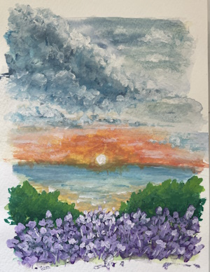

En kort introduktion
Tyvärr har jag varit rätt konsekvent med intressen och aktiviter, så detta kommer snarare bli en chans för jämförelse mellan hur dessa aktiviter har utvecklats genom tiden. Men lite kort sammanfattas så har jag i många år haft läsning som en stor hobby med varierande genrer, allt från biografier till fantasy. Sedan har jag se senaste åren börjat gilla det mer kreativa i målning där mitt nyaste köp att testa är alkoholmarkers. Men tidigare har det främst varit akvarell som har varit intressant.
När jag var liten så var det Pingu som var det absolut bästa som fanns. Otroligt många timmar efter dagis som mina stackars föräldrar behövde lyssna på, men jag hade kul :) En av de avsnitten jag minns lite extra är det när Pingu, tillsammans med sin lillasyster, skaffade ett stark intresse för att sticka, vilket väldigt snabbt blev väldigt fel.
